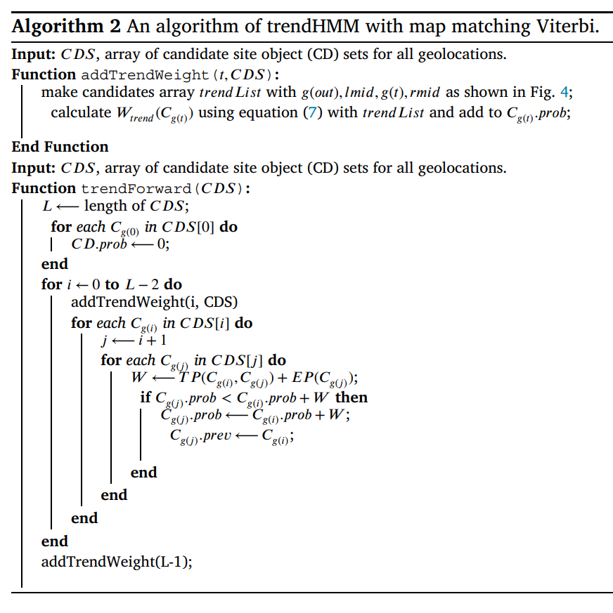

3. 데이터 전처리 :실험을 위한 데이터 전처리.
- 이동 데이터의 데이터 전처리 알고리즘인 Ramer-Douglas-Peucker algorithm을 적용한 데이터셋을 추출합니다.
그리하여 데이터 전처리 알고리즘이 적용된 데이터셋과 raw 데이터셋을 준비합니다.
4. 모델 구조 디자인 :자료를 기반으로 한 맵 매칭 모델 디자인.
- 필요한 함수 및 클래스 등을 구성하며 전반적인 모델의 구조를 디자인합니다.
5. 모델 구현 :디자인된 각 요소들의 구현.
- 모델 구조 디자인을 기반으로 하여 각 요소들을 구현(프로그래밍)합니다.
6. 모델 테스트 및 보수 :구현 완료한 모델 테스트 및 보수.
- 구현 완료한 각 요소들을 통합하여 모델을 테스트합니다. 테스트 과정을 거친 후, 결과를 기반으로 모델을 보수합니다.
7. 성능 비교 :기존의 HMM 모델과 새 모델 trendHMM 모델의 결과값 비교.
- 최종적으로 완성된 모델을 가지고 기존의 HMM 모델과 새 모델 trendHMM 모델의 결과값을 가지고 새 모델의 성능을 평가합니다.
성능 평가의 지표는 기존의 HMM 논문(Hidden Markov map matching through noise and sparseness)에서
사용되었던 Route Mismatch Fraction(RMF, 경로 불일치 비율)로 선택합니다.
8. 논문 작성 :실험 결과를 기반으로 한 논문 작성.
실험 결과를 기반으로 논문을 작성합니다. 기존 모델과 새로운 모델과의 기본 성능 차이, 데이터 전처리 과정에 따른 성능 차이를
근거로 하여 새로운 모델의 우수성을 기준으로 논문을 작성합니다.
9. 최종 검토 :논문 투고 및 수정.
작성 완료된 논문을 해외 저널에 투고한 후, 수정 과정을 수행합니다.
3. 알고리즘(An enhanced version of HMM based map matching algorithm)
section 3.1 : 용어 설명.
section 3.2 : HMM 기반 맵 매칭 기초.
section 3.3 : HMM 기반 맵 매칭의 한계.
section 3.4 : 제안된 알고리즘(trendHMM).
4. 실험(Experiments)
section 4.1 : 데이터 및 실험 설정.
section 4.2 : 파라미터 추정.
section 4.3 : 실험 결과.
5. 결과 및 미래 연구(Conclusion and future research)
논문 결과 및 미래 연구 방향성 제시.
0. 개요
이 논문은 Hidden Markov Model (HMM)을 이용한 기존 맵 매칭 알고리즘의 한계를 극복하기 위해 "trendHMM 맵 매칭"이라는 새로운 알고리즘을 제안합니다.
기존 HMM 모델은 시계열 데이터의 의존성을 과도하게 간소화하여 정확한 매칭 결과를 얻기가 어려운 반면, trendHMM은 주변 데이터의 이동을 고려하여 더 넓은 범위의 데이터 의존성을 반영합니다.
실험 결과, trendHMM 맵 매칭은 다양한 환경과 데이터에 대해 정확한 결과를 제공하였고, Route Mismatch Fraction를 기준으로 기존 대비 최대 17.58%의 성능 향상을 보여주었습니다.
1. 소개
연구에서는 무선 통신과 지리 위치 기술 발전으로 수집되는 대량의 지리 데이터 처리에 초점을 맞추고 있습니다.
맵 매칭 기술 중 Hidden Markov Model(HMM)을 사용한 접근 방식의 한계를 극복하기 위해 "trendHMM" 맵 매칭 알고리즘을 제안합니다.
기존 HMM 기반 알고리즘이 데이터의 이동을 과도하게 단순화하는 문제를 다루기 위해 해당 연구의 알고리즘은 데이터의 이동 경향을 고려하여 성능을 향상시켰습니다.
실험 결과, trendHMM이 기존 HMM 기반 방법보다 정확한 결과를 보여주었고, 데이터 전처리 없이 우수한 성능을 보여주었습니다.
2. 관련 연구
대부분의 맵 매칭 알고리즘은 유사성 모델, 후보 진화 모델, 스코어링 모델, 상태 전이 모델 네 가지 범주로 널리 분류됩니다.
이 중 상태 전이 모델은 Hidden Markov Model (HMM)을 사용하며, 이는 연속적인 지리 데이터의 맵 매칭에 주로 활용됩니다.
HMM은 Markov 체인의 상태를 직접 관찰할 수 없지만 관측된 측정치에서 유추할 수 있는 경우에 중점을 둡니다. 이 모델은 도로 네트워크 근처의 도로를 후보 위치로 고려하고 최종 매칭 경로를 결정합니다.
3. 알고리즘
3.1 주요 용어
Geolocation data : 측정된 지리 위치 좌표.
Trajectory (Tr) : 이동 데이터의 시간적 순서.
Road Network : 도로 연결성의 그래프 표현.
Route : 궤적과 일치하는 도로 네트워크의 엣지로 구성된 시계열.
3.2 HMM 기반 맵 매칭 기초 개념
목적 : 궤적의 각 운동 데이터를 도로 네트워크의 특정 엣지에 매치.
모델링 방식 : 실제로 객체가 위치한 엣지를 숨겨진 상태로 모델링.
방출 확률 : 실제 도로 위치를 관측할 확률.
전이 확률 : 실제로 다른 후보로 전환할 확률.
Viterbi 알고리즘 : 가장 가능성 있는 경로를 효율적으로 계산하기 위해 사용됨.
3.3 HMM 기반 맵 매칭의 한계
HMM 가정 : 시간 𝑡의 관측값은 이전 시간 𝑡 - 1에만 의존한다는 가정 (마코프 속성).
한계 : 단순화된 가정으로 인한 부정확한 일치.
3.4 제안된 알고리즘 (trendHMM 맵 매칭 알고리즘)
주요 개념 : movement 트렌드 개념 도입.
movement 트렌드 : 주변 데이터 포인트를 포함한 더 넓은 범위의 이동 데이터에 의존.
알고리즘 단계 :
단계 1 (addTrendWeight) : movement 트렌드를 계산에 추가.
단계 2 (trendForward) : trendHMM에 맞게 수정된 forward 연산.
단계 3 (backward) : 최종 일치 경로를 반환하기 위한 역방향 단계.
알고리즘 복잡도 :
시간 복잡도 : HMM 및 trendHMM 모두에 대해 𝑂(𝑇 𝐶^2).
공간 복잡도 : HMM 및 trendHMM 모두에 대해 𝑂(𝐿).
알고리즘 세부 정보 :
가중치 계산 : 맵 매칭 점수 계산 시 운동 트렌드를 고려하는 가중치 𝑊𝑡𝑟𝑒𝑛𝑑 도입.
윈도우 구성 : 주변 데이터 포인트를 그룹화하여 관련 운동 트렌드를 포착하기 위한 윈도우 생성.
중심 계산 : 윈도우 내 이전 시간 단계의 데이터 포인트의 중심 계산.
궤적 구성 : 데이터 포인트를 연결하여 운동 트렌드를 포함한 새로운 궤적 생성.

4. 실험
4.1 데이터 및 실험 설정
실험에 사용된 데이터는 전 세계의 다양한 위치에 걸친 100개의 지리 위치 트랙으로 구성된 대규모 실제 데이터셋입니다.
매칭 정확도 측정 : Route Mismatch Fraction (RMF)를 사용하여 매칭 정확도를 측정하며, RMF는 거짓 양성 도로 세그먼트의 총 길이(𝑑+)와 거짓 음성 도로 세그먼트의 총 길이(𝑑-)를 포함하여 맵 매칭 오류를 나타냅니다.
4.2 파라미터 추정
실험에서는 trendHMM 알고리즘에 대한 윈도우 크기(𝑊) 추정이 필요하며, 실험을 통해 다양한 샘플링 간격에 대한 최적의 𝑊 값을 선택합니다.
4.3 실험 결과
효율성 평가 : trendHMM의 효율성은 다양한 샘플링 간격에서 비교되며, 기존의 HMM 기반 방법과의 RMF 값을 비교하여 평가됩니다.
파라미터 추정 결과 : 𝑊 값의 변화에 따른 실험 결과를 통해 𝑊 값이 작을 때는 성능이 향상되는 경향이 있지만, 샘플링 간격이 커질수록 성능이 하락하는 것을 확인했습니다.
<샘플링 간격에 따른 경로 불일치 비율값>
Sampling Interval(s)
10
20
30
60
120
trendHMM_with_preprocessing
0.0918
0.0938
0.1083
0.1658
0.2491
trendHMM_without_preprocessing
0.0880
0.0968
0.0980
0.1438
0.2469
HMM_with_preprocessing
0.1053
0.0956
0.1189
0.1707
0.2678
HMM_without_preprocessing
0.1049
0.1463
0.1523
0.1846
0.2969
<best 값을 기준으로한 trendHMM의 HMM 대비 성능 상승률>
Sampling Interval(s)
10
20
30
60
120
trendHMM
0.0880
0.0938
0.0980
0.1438
0.2469
HMM
0.1049
0.0956
0.1189
0.1707
0.2678
Performance Enhancement
16.11%
1.88%
17.58%
15.76%
7.80%
데이터 전처리 비교 : HMM는 전처리가 필수적인 반면, trendHMM은 데이터 전처리 없이도 더 나은 성능을 보여줍니다.
성능 비교 : trendHMM은 전반적으로 높은 성능을 보이며, HMM을 능가하는 결과를 얻을 수 있습니다.
장점 : 기존의 HMM은 매우 단기간의 종속성만 고려하나, trendHMM은 윈도우 크기를 조정하여 시간 의존성을 더 유연하게 조절할 수 있습니다. 또한, trendHMM는 데이터 전처리 없이도 높은 효율성을 보이며, 이는 전처리 관련 비용을 절감할 수 있는 장점으로 나타납니다.
5. 결론
제안한 방법 : 기존의 HMM 기반 맵 매칭을 향상시키기 위해 trendHMM 맵 매칭 방법을 제안했습니다. trendHMM은 더 넓은 움직임 패턴을 고려하여 HMM의 한계를 극복하며, 동시에 전통적인 방법과 동일한 시간 복잡성을 유지합니다.
실험 결과 : 다양한 샘플링 간격으로의 실험을 통해 trendHMM은 우수한 성능을 보여주었습니다. 특히, HMM과 달리 trendHMM은 데이터 전처리 없이 높은 정확도를 달성했습니다.
전처리 비용 감소 : 결과적으로, trendHMM은 기존의 HMM 접근 방식과 관련된 전처리 비용을 줄일 수 있음을 알 수 있습니다.
향후 연구 방향 : trendHMM은 속도, 방향, 또는 도로 선호도와 같은 외부 요소를 고려하지 않고 통계 모델링만을 사용하는 방법입니다. 따라서 이는 맵 상의 도로를 식별하는 맵 추론 문제에 더 적합할 것으로 예상됩니다.
4. 프로젝트 결과
1. 주요 내용
HMM 기반 맵 매칭을 보완한 새로운 맵 매칭 모델을 연구하고, 해당 연구 결과를 기반으로 논문을 작성하였습니다.